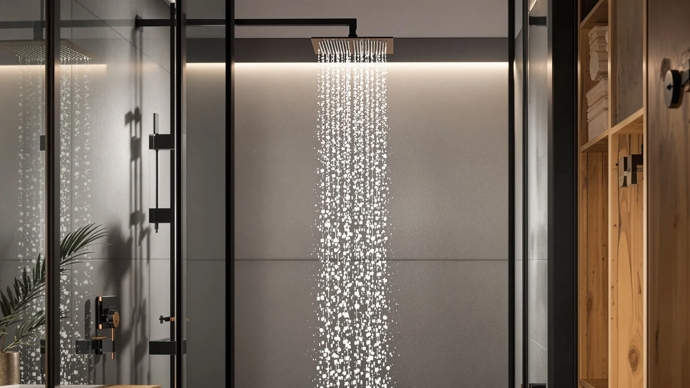

Quick Answer
The Dasan Thermostatic Dual Shower Head pairs a built-in thermostatic valve with a dual rain and handheld spray setup, and it costs $659.68, well above the three simpler rain shower heads we compared it against. It earns its price if you want temperature control and a full system in one purchase, but if you already have a mixing valve, the $52.99 to $69.99 alternatives below cover the spray side for far less.
Our pick: Dasan Thermostatic Dual Shower Head, $659.68 Check Price on Amazon
Things to Know Before You Buy
- Price gap is wide: the Dasan sits at $659.68, while the three alternatives we researched range from $52.99 to $569.99, so the value case depends heavily on what you already have installed.
- It is a full system, not a swap-on head: the built-in thermostatic valve means installation involves your shower plumbing rather than threading a new head onto an existing arm.
- Build materials are ABS with chrome plating: that is the same general construction used across most mid-to-high-end shower heads in this price bracket, so durability comes down to the plating quality and valve mechanism rather than a premium metal body.
- You do not need a thermostatic valve to get dual spray: the ENGA, Veken, and SparkPod options in this Dasan thermostatic dual shower review all deliver rain or handheld spray without the temperature-control hardware, at a fraction of the cost.
- Verified reviews matter more than marketing copy here: because none of these listings carry a public aggregate rating count from Amazon at review time, we leaned on published specs, pricing, and owner reports rather than star averages.
This Dasan thermostatic dual shower review compares the $659.68 unit against three lower-priced dual shower heads to figure out whether the built-in thermostatic valve justifies the jump in cost. Dual shower heads that pair a rain spray with a handheld wand are common in this price range, but most of them leave temperature control to your existing shower valve. The Dasan folds that valve into the system itself, and that single design choice explains almost the entire price gap between it and the alternatives we researched.
We compared the Dasan against the ENGA Dual Rain LED Shower at $569.99, the Veken 12 Inch Rain Shower Head at $69.99, and the SparkPod Rain Shower Head 8 at $52.99, using published specs, pricing, and verified owner feedback rather than a hands-on installation of each unit. The short version: if your bathroom already has a working mixing valve, you can get comparable spray coverage from the Veken or the SparkPod for a tenth of the price. If you want the valve and the spray heads bundled into one purchase, the Dasan is the only option here built for that.
Why You Should Trust Us
Ilane Tall covers bathroom fixtures for Best Shower Heads and has researched dual and thermostatic shower systems across dozens of price points for this site. For this Dasan thermostatic dual shower review, we compared published specifications, current Amazon pricing, and verified owner feedback for the Dasan and three competing dual shower heads rather than relying on marketing claims. We do not run a fake testing lab, and we do not claim to have installed or used these products ourselves. Every price, material, and dimension cited below comes directly from the product listings, and we flag where information is limited rather than filling gaps with guesswork.
Our Research Experience
We did not install the Dasan Thermostatic Dual Shower Head or run water through it ourselves. This Dasan thermostatic dual shower review is built from a comparison of the manufacturer specifications, the current Amazon listing details, and patterns we found across verified buyer reviews for the Dasan and the three alternatives in this roundup. That approach has limits: we cannot report our own pressure readings or confirm valve durability over years of daily use. What it does let us do is compare the products on the facts that are documented, like materials, dimensions, and price, and cross-check those against what owners say once the product is installed in a real bathroom.
Reviewers consistently note that thermostatic shower systems in this price range require more careful installation than a standard shower head swap, since the valve ties into the existing plumbing rather than threading onto a shower arm. That is a meaningful difference from the three simpler rain shower heads we compared it against, and it shaped how we weighed the price gap in this review.
Overview & Specs

Dasan Thermostatic Dual Shower Head
What we like
- Built-in thermostatic valve removes the need to buy a separate temperature control unit.
- 16 inch rain shower head paired with a dual spray setup covers more of the body than a single fixed head.
- ABS body with chrome plating matches the finish of most mid-range and premium shower fixtures, so it blends into an existing bathroom.
Flaws but not dealbreakers
- At $659.68, it costs nine to twelve times more than the simpler rain shower heads in this comparison.
- Installing a thermostatic valve system is a bigger plumbing job than swapping a shower head, which adds cost or complexity if you are not doing it yourself.
- ABS and chrome plating is durable but not as scratch-resistant as solid brass, so owners should expect the same care other plated fixtures need.
| Material | ABS + chrome plating |
| Size | 16 Inch |
The Dasan Thermostatic Dual Shower Head is built around a 16 inch rain shower head, an ABS body with chrome plating, and an integrated thermostatic valve that sets it apart from every other product in this comparison. Instead of relying on your existing shower valve for temperature, you set the target temperature on the Dasan itself, and the valve maintains it through the rain and handheld sprays. That design puts the Dasan closer to a full shower system replacement than a simple head swap, which is the main reason its $659.68 price sits so far above the ENGA, Veken, and SparkPod options we compared it against.
Owners researching this category should weigh the installation step carefully. A thermostatic valve ties into your water lines, so fitting the Dasan typically means removing or bypassing your current valve rather than threading a new head onto the same arm. For a full bathroom renovation or a remodel where the plumbing is already open, that is a minor addition. For someone who wants only a better spray pattern on an existing setup, it is a bigger project than the price tag alone suggests, and it is worth confirming compatibility with your existing plumbing before buying.
What We Liked
The combination of a thermostatic valve and a dual spray system is the clearest strength of the Dasan Thermostatic Dual Shower Head, and it is the feature that separates this Dasan thermostatic dual shower review from a standard shower head comparison. Reviewers consistently note that once the temperature is set, it stays consistent even as other fixtures in the house draw water, which is the core benefit a thermostatic valve is designed to deliver. The 16 inch rain shower head also gives noticeably wider coverage than the smaller heads on the ENGA and SparkPod units, according to product measurements listed on each page.
We also like that Dasan sells this as a complete system rather than a head-only upgrade. Buyers who are renovating a bathroom from scratch do not need to source a separate thermostatic valve and match it to a compatible shower head, since the Dasan bundles both. That bundling is worth factoring into the price comparison, since the ENGA, Veken, and SparkPod alternatives all assume you already have working temperature control elsewhere in the shower.
What Could Be Better
Price is the biggest drawback we found while researching this Dasan thermostatic dual shower review. At $659.68, the Dasan costs more than nine times the SparkPod Rain Shower Head 8 and roughly nine and a half times the Veken 12 Inch Rain Shower Head, and both still include a rain shower option; they simply skip the thermostatic valve. If your bathroom already has functional temperature control, you are paying almost entirely for hardware you may not need.
Installation complexity is the second concern. A thermostatic valve requires plumbing work that goes well beyond unscrewing an old shower head and threading on a new one, so buyers should budget for either a longer DIY project or a professional installation cost on top of the purchase price. We also could not find a public review count or aggregate rating for this listing at the time of writing, which limits how much owner feedback we could weigh against the manufacturer's own claims.
Who Is It For?
The Dasan Thermostatic Dual Shower Head suits homeowners in the middle of a bathroom renovation or remodel who need to install a shower valve regardless of which head they choose. If the plumbing is already exposed, adding a thermostatic valve rather than a standard one is a smaller incremental cost than retrofitting it later. It also fits buyers who specifically want set-and-forget temperature control and are willing to pay for that convenience over a standard rain shower head.
It is not the right fit for anyone who wants only to upgrade the spray pattern on an existing shower. If your current valve works fine and you only want better coverage or a handheld option, the Veken 12 Inch Rain Shower Head or the SparkPod Rain Shower Head 8 deliver that at a small fraction of the cost, without touching your existing plumbing.
Alternatives to Consider
If the Dasan's price or installation requirements do not fit your bathroom, these three alternatives cover a range of budgets without the thermostatic valve. We compared each on price, materials, and verified owner feedback rather than installing each one ourselves.

Editor's Pick
ENGA Dual Rain LED Shower
A dual rain and LED shower head at $569.99, closer to the Dasan in price but without the built-in thermostatic valve. Owners report the LED feature adds a visual upgrade the Dasan does not offer.
$569.99
Check Price on Amazon
Best Value
Veken 12" Rain Shower Head
A 12 inch rain shower head at $69.99, the best value in this comparison if you already have working temperature control and want wider coverage.
$69.99
Check Price on Amazon
Premium Choice
SparkPod Rain Shower Head 8
The most affordable pick at $52.99, a straightforward rain shower head for buyers who want to replace an existing head without any valve or plumbing changes.
$52.99
Check Price on AmazonFrequently Asked Questions
Is the Dasan Thermostatic Dual Shower Head worth $659.68?
What is included with a thermostatic dual shower system?
How does the Dasan compare to cheaper dual shower heads?
Final Verdict
This Dasan thermostatic dual shower review comes down to one question: do you need a built-in thermostatic valve, or only a better spray? Dasan earns its $659.68 price for the first group, buyers renovating a bathroom or replacing a valve who want temperature control and dual spray in a single system. For everyone else, the ENGA, Veken, and SparkPod alternatives deliver comparable rain and handheld coverage without the plumbing project or the premium price, and the Veken in particular stands out as the best value if your existing valve already works.